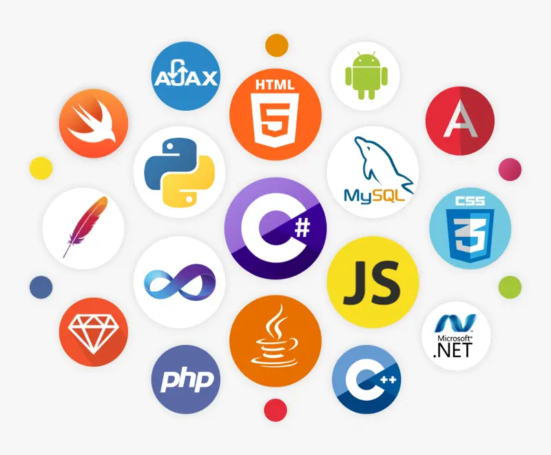

Courses
Visualize the following courses of quality with high-demand skills in the market and leverage them to enhance your business or professional curriculum
View CoursesWelcome to my professional portfolio. Here you can review my full professional path, experience, certificates, awards and skills.
Contact
+57 3174252809
palajnc@gmail.com
Visualize the following courses of quality with high-demand skills in the market and leverage them to enhance your business or professional curriculum
View CoursesI am a data scientist and asset manager specializing in machine learning inference, with experience in creating innovative technological solutions. My passion for technology and data analysis has led me to develop skills in programming, statistical modeling, and asset management. Throughout my career, I have worked on diverse projects ranging from web application development to the implementation of machine learning models to solve complex problems. I am committed to continuous learning and constant improvement, always seeking new ways to apply my knowledge to generate value in every project I undertake. For over four years, I have consistently generated returns of over 25% annually as an investor in the financial markets, applying fundamental analysis and account management.


Professional stock investor and asset manager with return of capital invested above +25% annual for more than 4 years, fundamental analysis, account management
View